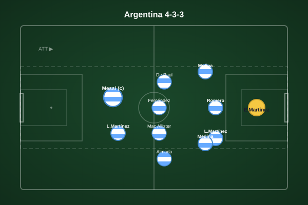
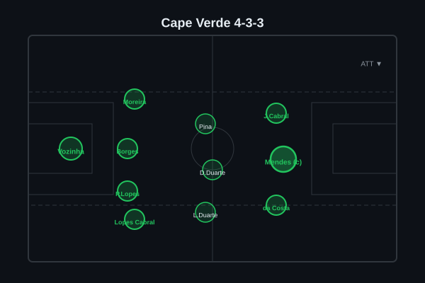
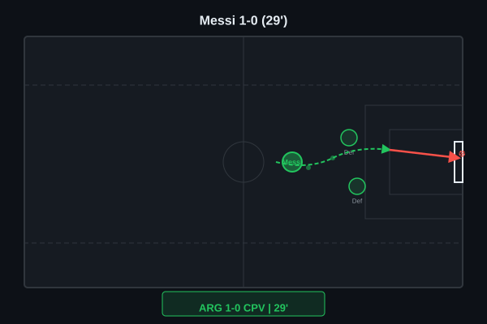
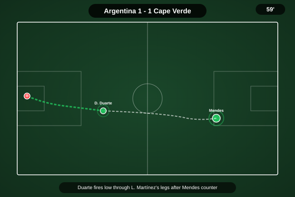
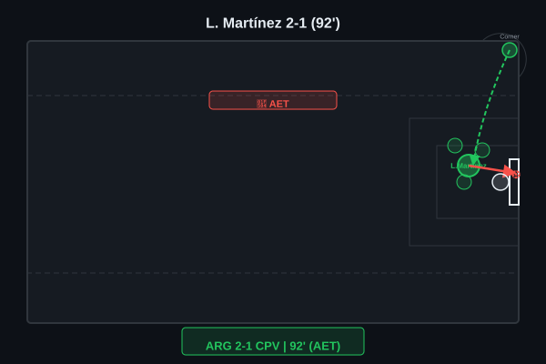
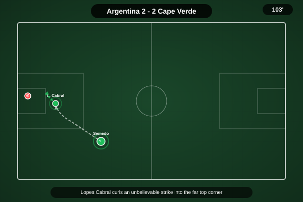
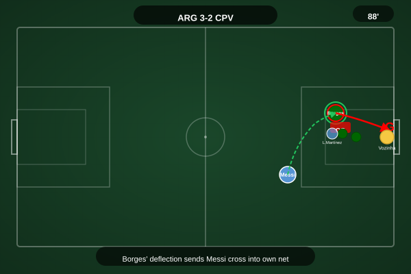
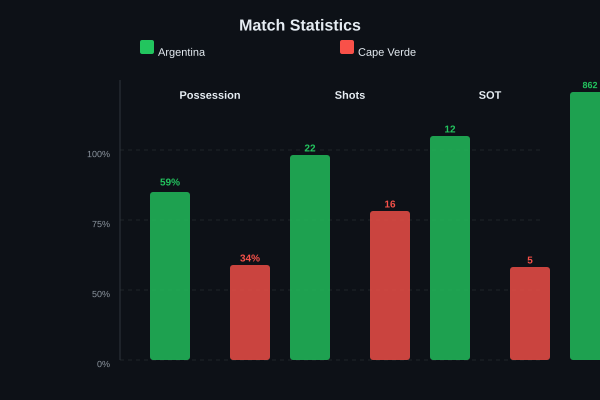
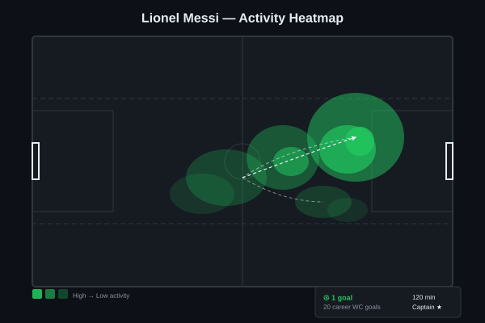

Messi opened the scoring with his 7th goal of the tournament but Deroy Duarte equalised with a long-range strike before half-time. Lisandro Martinez headed Argentina back in front from a corner in the first half of extra time, but Sidny Lopes Cabral equalised again from a free-kick. The winner came through a cruel own goal - Diney Borges turning into his own net under pressure from an Argentina attacker in the 111th minute.


Argentina (4-4-2): E. Martínez; Molina, Romero, L. Martínez, Medina; De Paul, Fernández, Mac Allister, Almada; Messi (c), L. Martínez. Cape Verde (4-3-3): Vozinha; Moreira, Borges, P. Lopes, S. Lopes Cabral; Pina, D. Duarte, L. Duarte; J. Cabral, Mendes (c), N. da Costa.
Argentina began with the composed authority of a defending champion - Messi dropping into pockets between the lines, Almada and Mac Allister rotating wide to stretch Cape Verde's compact 4-3-3 block, and the early goal materialised from exactly that pattern: Messi exchanging passes with De Paul before gliding past two defenders and finishing low. It was a goal that felt like it would settle the occasion, that Argentina would simply control the game from there. Instead, Cape Verde refused to accept the script.
The Cape Verdean press, disciplined and brave, forced repeated Argentine turnovers in the middle third - Pina and L. Duarte particularly effective at jumping onto loose passes. Deroy Duarte's equaliser was both a stunning individual moment and a product of genuine structural belief: picking the ball up 30 yards from goal, shifting onto his right foot, and curling beyond Emiliano Martinez from distance. From that moment, the debutants played without fear. They absorbed Argentina's second-half pressure, protected Vozinha well in transition, and forced extra time with growing belief that they could actually win.
The decisive tactical phase came in extra time, where Argentina's physical superiority in both boxes eventually told - Lisandro Martinez powering home a header from a corner, Cape Verde responding instantly through Lopes Cabral's free-kick, and finally the cruelest moment: Diney Borges, under pressure from an Argentina substitute, turning the ball into his own net in the 111th minute. Cape Verde deserved to lose on the scoreboard but not on merit - a performance that announced their arrival on the global stage.

A vintage Messi moment to break the deadlock. Collecting from De Paul in the inside-right channel, he feinted to go outside before cutting infield, gliding past two Cape Verde defenders with minimal contact, and placing a left-footed shot low into the far corner beyond Vozinha's reach. His 7th goal of this World Cup, his 20th in World Cup competition overall - another page in the legend, and at that moment it felt like the start of a routine Argentine procession.

The moment Cape Verde arrived at the World Cup. Deroy Duarte picked up possession in the left half-space, 30 yards from goal, with little obvious danger. He took one touch to set himself, another to shift the ball onto his stronger right foot, and then unleashed a curling strike that bent away from Emiliano Martinez and nestled inside the far post. A goal of genuine individual quality - not a scrappy equaliser, not a set-piece fortuitous bounce, but a statement finish from a player who believed he belonged at this level.

Extra time had barely begun when Argentina reclaimed the lead from the most predictable source - a set piece. Mac Allister's corner delivery was pinpoint to the near post, and Lisandro Martinez rose highest, powering a downward header past Vozinha from close range. It was the kind of goal Argentina had been searching for throughout the second half, and it felt, momentarily, like the champions had finally reasserted their authority.

If Argentina thought the second goal had broken Cape Verde's resistance, they were quickly disabused of that notion. A free-kick awarded 25 yards from goal, slightly right of centre, and Sidny Lopes Cabral stepped up with extraordinary composure. His strike bent over the Argentine wall and dipped under the crossbar - Emiliano Martinez got a hand to it but couldn't keep it out. Cape Verde had refused to fold, and the stadium erupted for the underdog once more.

The cruelest way for a heroic performance to end. An Argentina cross into the box caused momentary panic in the Cape Verde defence, and Diney Borges - attempting to clear under pressure from a charging Argentine substitute - could only guide the ball past his own goalkeeper. The own goal silenced the Cape Verdean support and gave Argentina a lead they would not surrender. Borges collapsed to his knees; the entire Cape Verde bench knew what it meant. A harsh end for a player who had been excellent all night.

59-41 possession, 22-16 shots, 12-5 shots on target, 862-491 passes, 8-8 corners - Argentina dominated the ball but Cape Verde were far more efficient with their opportunities.

Not vintage Messi across 120 minutes - the first half was his best, the second half saw his influence wane as Cape Verde's midfield grew in confidence and squeezed his space. But that 29th-minute goal was a moment of class that only he can produce, and his leadership in extra time - organising teammates, demanding composure, refusing to let the occasion slip - was arguably as valuable as the goal itself. His 20th World Cup goal extends his all-time record and keeps Argentina's title defence alive, but this was a night when the team around him needed to carry him across the finish line, not the other way around.
Illustrative reconstruction based on known event locations, not raw GPS tracking data.
Got right: Messi scored (7th goal of the tournament, consistent with his tournament form) and Argentina ultimately advanced - the outcome was correct, just the path was wildly different to what was anticipated. The prediction that Argentina's possession dominance would create chances was borne out in the final shot count and territorial control.
Got wrong: Cape Verde's resilience was massively underestimated - the pre-match analysis did not account for the genuine tactical discipline and individual quality the debutants would bring. Extra time was not projected, the specific scorers (D. Duarte, Lopes Cabral) were not on the pre-match radar, and the margin of victory was far too generous to Argentina. Messi only scored once, not multiple times as the 3-0 prediction implicitly assumed.
Messi - 7.5 (opener, leadership in extra time)
L. Martinez - 7.5 (crucial extra-time header)
Mac Allister - 7.0 (assist from corner, energetic)
E. Martínez - 6.5 (couldn't keep out either goal)
D. Duarte - 8.5 (stunning equaliser, tireless)
Lopes Cabral - 8.0 (free-kick equaliser, constant threat)
Borges - 6.5 (excellent before cruel own goal)
Vozinha - 7.0 (several important saves)
Argentina face Australia or Egypt in the Round of 16. Cape Verde exit as heroes of the tournament, having won hearts across the football world.
💬 Reactions & Comments